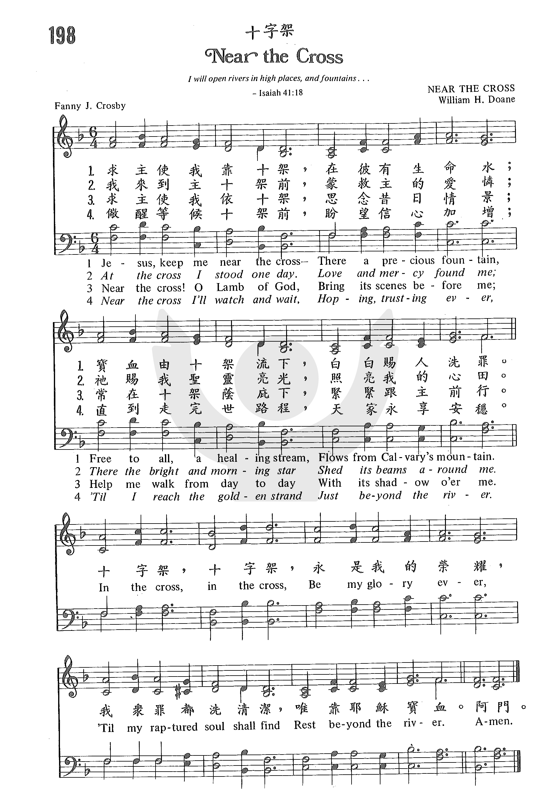

|
|
136十架为我荣耀 |
|
1 Jesus, keep me near the cross, Refrain: 2 Near the cross, a trembling soul, 3 Near the cross! O lamb of God, 4 Near the cross! I'll watch and wait, Baptist Hymnal, 1991 |
|
|
https://www.zanmeishige.com/tab/25555.html?songbook=1&index=198 第198首 -十字架
 https://hymnary.org/hymn/BH2008/233
|
|
|
|
|

Jesus, Keep Me Near the Cross SE Samonte https://youtu.be/T5C9FfVA-OI -
https://youtu.be/aN2ITh15keo -
靠近十架 Near the Cross https://youtu.be/Xl8wCuEArrI - 十架為我榮耀 Near the Cross - 第二屆聖詩頌唱會
https://youtu.be/QxngP17NZLM - Jesus, keep me near the cross;
https://youtu.be/bPtUwVoJsi8
| Text: | Jesus, Keep Me Near the Cross |
| Author: | Fanny J. Crosby |
| Tune: | NEAR THE CROSS |
| Composer: | William H. Doane |

Tune Information
| Title: | NEAR THE CROSS (Doane) |
| Composer: | W. Howard Doane (1869) |
| Meter: | 7.6.7.6 with refrain |
| Incipit: | 34321 66511 33234 |
| Key: | E♭ Major |
| Copyright: | Public Domain |

诗歌背景资料：136十架为我荣耀
这首诗是美国盲女诗人芬妮、克罗斯比（Fanny Crosby，1820-1915）所写的优美的诗歌之一。它是先由杜恩（William
H.Doane
1832-1916）谱好了曲调，再请她作词。词曲配合的很好，所以把调名称为《十字架》。她在生下来6个星期时，眼睛发炎，当地眼科医生不在，临时找了另外一个人来治疗，那人主张以药膏来热敷，没想到就这样把她的双眼都弄瞎了。在她后来的传记里，她提到有一位弟兄可怜她的情况，以为她对自己从6个星期大就失明一定有很多的自卑、自怜、怨恨。但她告诉那位弟兄，“我巴不得我一生下来就是瞎子”。他非常不解地问道：“为什么呢？”她回答：“这样，当我有一天到主那里时，第一位我眼睛能看到的就是我的主耶稣。”
为什么主耶稣在她心中是这么地重要？为什么在她歌词中她说到十字架永是她的荣耀？因为十字架是主的诅咒、刑罚、羞辱、痛苦、弃绝的记号，如今变成她的祝福、赦免、荣耀、喜乐、和好的记号。她每天以主耶稣和他的十字架为荣，就不自夸，不自卑，而在生活中依靠十架大能见证主。这首诗歌的副歌“十字架，十字架，永是我的荣耀。”是发自内心深处的呼声，唱者、听者都会受感动。
曲调是杜恩（William Howard Doane,
1832-1915）所写着，他是美国的一位工业家、发明家和慈善家。他在十四岁时就任学校诗班的指挥。早年与父亲在康州及芝加哥经营纺织厂，嗣后与友人合作，制造锯木机器，在当地是颇具声望的社会与宗教领袖。他是一位虔诚的浸信会会友，曾任主日学主任达二十五年之久。他捐大笔金钱于慈善事业，并捐建浸信会大学的图书馆，奉献管风琴给青年会会堂。他自己家中也设有图书室及音乐室。
杜恩在工作之暇，以作曲及编印诗歌集为乐，一生作曲约2200首。他经常为芬妮克罗斯比（Fanny J.
Crosby）的圣诗谱曲，他们合作的著名圣诗有：《莫把我弃掉Pass Me Not》，《我乃属耶稣I Am Thine, O Lord》，《爱主更深More
Love to Thee, O Christ》，《荣耀归于真神To God Be the Glory》等等。
https://www.mred365.cn/szxg/7139.html
简介（一） （来源：《岁首到年终》）
靠近十架 (Near the Cross) 《岁首到年终》
Fanny J. Crosby, 1820 – 1915
但我断不以别的夸口，只夸我们主耶稣基督的十字架。（加 6:14）
许多人要荣耀而不要十字架，要光明而不要燃烧。你要知道，必须先有了十字架的苦难，才有加冕的荣耀。[dropdown_box expand_text=”全文” show_more=”显示” show_less=”隐藏” start=”hide”]一帆风顺，不是十字架的性质；乐而忘忧，也不是十字架的性质。惟有经过重重磨炼，尝过深深的艰苦，才是进入荣耀的道路。仇敌想藉十字架毁灭基督的生命，想不到却增添了基督的生命。十字架虽是一个悲剧，但却是一个伟大的胜利；虽是一个惨败，但却是一个最高峰的成功。
Fanny Crosby 著作之诗歌超过八千首，大多数是在 1870 年至 1915
年离世之间所作。广受欢迎较著名的如＂莫把我弃掉＂，＂主凡事引导＂，＂我乃属耶稣＂，＂赞美祂！赞美祂！＂，＂荣耀归于真神＂及＂靠近十架＂等乃写于她的后半生。Fanny
Crosby 最喜爱的座右铭是：「我想人生并非漫长，因此相信人们宁可读一首诗胜于看一篇讲章。」
这首「靠近十架」的副歌，常被我国福音派布道家使用，几乎是每个信徒家喻户晓的灵歌。听说宋尚节博士于一九四四年八月十七日在北京香山息劳谢世时，这副歌还在他的口唇中唱颂不已。
1 求主使我近十架，彼有宝贵泉水，
由加略山巅流下，能医治万民罪。
2 我惊惧，靠近十架，主慈爱寻到我，
那里有＂明亮晨星＂，发亮光环绕我。
3 近十架，求神羔羊，助我常思想祢，
使我每日走天路，十字架常荫庇。
（副歌）
十字架，十字架，永是我的荣耀，
直到我欢聚天家，仍夸主十字架
＊世上最快乐的人是背起十字架的人。──吴汉斯[/dropdown_box]
https://www.xueshengshi.com/?p=507
简介（二） （ 转载:《赞美诗史话》 ）
近主十架 ( Near the Cross ) 《赞美诗史话》
这首诗歌是美国女盲诗人克罗斯比（事略参阅第11首）所写的最优美、最流行的圣诗之一。它的副歌“十字架，十字架，永是我的荣耀”是奋兴会上经常听到的短歌，[dropdown_box expand_text=”全文” show_more=”显示” show_less=”隐藏” start=”hide”]三十年代我国教会已常唱颂，它是先由多恩（事略参阅第11首，见第3首注①）谱好了曲调，再请克罗斯比作词。词曲配合得很好，所以把调名称为《近乎十架（NEAR THE CROSS）》。最初见于布雷德伯里所编的《明珠（BRIGHT JEWELS）》一书，1869年在纽约出版。
《近主十架歌》共有四节，第一节讲到依傍主十架，只有基督宝血洗净万众罪愆；第二节作者谦卑地说自己信心小，但主爱不丢弃她；第三节是要在十架前的祷告，思想救主宏恩；第四节讲要仰望，等候救主再来，同享天堂荣耀；副歌则指出了我们之所以罪得洗清，是惟靠耶稣宝血。
曲调平稳朴素，高潮是在副歌的“十字架，十字架”，是发自虔敬信徒内心深处的呼声，使唱者、听者都受感动。[/dropdown_box]
https://www.xueshengshi.com/?p=507
简介（三）
《近主十架歌》
这首感人的圣诗出自美国盲女诗人克罗斯比（F·J·Crosby
1820-1915年）之手，是她所写的最优美，最流行的圣诗之一。此歌在各国布道会和奋兴会上历久不衰，许多基督徒在歌唱时感动得流泪不止。[dropdown_box expand_text=”全文” show_more=”显示” show_less=”隐藏”
start=”hide”]它的副歌“十字架，十字架，永是我的荣耀”如同发自虔敬信徒内心深处的呼声，更使唱者、听者都受感动，所以是奋兴会上经常听到的短歌。这首诗歌最早由我国著名的传道人王明道先生译成中文，三十年代我国教会已常唱颂。
歌曲中的典故
唱圣诗和唱任何其他的歌曲有所不同，许多人一开始只听其旋律，旋律引人则喜欢唱，旋律平淡则跳过去。这首诗的旋律非常感人，但是如果配合故事来体会，所能获得的就更加的丰富了。
1914年四月十日晚上，世上最大的邮轮“泰坦尼克号”(Titanic)，满载二千二百零七名搭客，由英国首航前往美国的纽约。
泰坦尼克号被誉为“不沉的方舟”，救生艇当然不会太多。不料启航后四天，就在大西洋的黑夜里误碰冰山。当时建造该船的工程师也在船上，经他详细的检查后，失望的告诉船长，船舱损毁严重，不久船将下沉。由于船上人多而救生艇不足，登时秩序大乱。
基督的见证者
这时一位乘客约翰·侯伯牧师（Rev.JohnHarper），应邀到美国芝加哥慕迪教会（MoodyMemorialChurch）布道。他眼见这紧急情况，就呼吁全船的基督徒到甲板集合。当时有几十位基督徒陆续前来，大家手拉手围成一圈，侯伯牧师庄严的宣告说：“弟兄姊妹们，我们随时都有生命危险，但我们已相信了耶稣，有了永生的盼望，不用惧怕；不过，船上还有不少未信的人，他们还未得救，若此刻失去生命，必永远沉沦灭亡，倘若我们现在不跟他们争用逃生设备，让未信者有更多人获救，以后他们仍有机会听闻福音，相信耶稣得永生。”
那一群基督徒听后，大受感动，产生了一致的响应，他们继续手牵手，一同唱著圣诗“更加与主接近，更加接近”，庄严的诗歌感动了船上的其它乘客，大家秩序井然的接受船上工作人员安排，让妇女儿童先登上救生艇。
乐队领班亨利·哈特利和其它的乐手，也穿著燕尾服走上甲板，为这群基督徒伴奏。在圣诗“更加与主接近，更加接近”的歌声中，锅炉爆炸、电力中断、船身断为两截，直到海水把这些基督徒与乐师的生命和歌声，一起带进大西洋底……
不一样的选择
侯伯牧师掉到海里时，抓住了一块浮木，在海面上漂流时，碰到另一个什么也没抓到的年轻人。牧师问青年人：“年轻人，您得救没有？”青年回答道：“没有。”
一个海浪把他们分开了。数分钟后，他们又靠近了，牧师再问他：“您与神和好没有？”他还是回答：“没有！”一个海浪又把他们分开。
最后一次，他们再靠近时，在海中时间久了，青年已经疲倦了，想放弃挣扎时。牧师却告诉年轻人：“年轻人，耶稣要救你！”说著他就把手中的木板，送给那个年轻人，自己沉入海中。
天亮之前，赶来救援的船只捞起了许多尸体，只有六位不在救生艇上的乘客生还，这年轻人就是其中之一。那位年轻人一到纽约，立刻赶到芝加哥慕迪教会，向大家见证：
“侯伯牧师原本今天要站在这里，向各位说话；但却因为我的缘故，他做了一次“不一样的选择”。我因此也认识了他所认识的那位神，从今以后，我也要继续侯伯牧师他“不一样的选择”。”
几天以后，在侯伯牧师的家乡，英国的格拉斯哥，也举行了一场追思仪式，当场也有一千多人站起来，像在芝加哥那里的几千位听众一样，宣示要继续侯伯牧师那“不一样的选择”……
真正的汉子
泰坦尼克号这一轰动全球的沉船事件，造成1502死亡，仅有705人获救。当这些生还者到达纽约后，亲眼目睹沉船上那一群基督徒的见证，生命有了不一样的选择。而生还者多是妇女儿童，也安慰了英美两国人民的伤痛。
67岁的头等舱乘客、全球最大的美斯百货公司创办人斯特劳斯，别人劝他：“保证不会有人会反对像您这样大年纪的人上救生艇”时，这位老人毫不犹豫地回答：“在还有女人没上救生艇之前，我绝不会上。”
世界著名的银行世家大亨古根海姆，穿上了最华丽的晚礼服说：“我要死得体面，像一个绅士。”他给太太留下的纸条写著：“这条船不会有任何一个女性因我抢占了救生艇的位置，而剩在甲板上。我不会死得像一个畜生，会像一个真正的男子汉。”
这些死难的男性乘客中，还有亿万富翁阿斯德、资深报人斯特德，炮兵少校巴特，著名工程师罗布尔等，他们都呼应侯伯牧师，把自己在救生艇里的位置让出来，给那些来自欧洲，脚穿木鞋、头戴方巾、目不识丁、身无分文的农家妇女。
消防员法尔曼．卡维尔，感到自己可能离开早了点，又回到四号锅炉室，看看还有没有其它的锅炉工困在那里。被分配到救生艇做划浆员的锅炉工亨明，把这个机会给了别人，自己留在甲板上，到最后的时刻还在放卸帆布小艇。
信号员罗恩一直在甲板上发射信号弹，摇动摩斯信号灯，不管看起来是多么没有希望。而报务员菲利普斯和布赖德，在报务室坚守到最后一分钟，即使船长史密斯告诉他们可以弃船了，他们仍然不走，继续敲击键盘，敲击著生命终结的秒数，发送电讯和最后的希望。
电影中出现的此歌曲
著名的好莱坞电影《泰坦尼克号》中，导演卡麦隆把提琴手从演奏晚会音乐转变成圣诗的过程处理得非常好，当船身倾斜到提琴手们不太能保持平衡的时候——也就是虚构的男女主角往船尾攀爬的时候，哈特利对其他的提琴手鞠了一个躬，说：“今晚我有很大的荣幸与你们一同演奏，现在，让我们各去各的吧！”
然而，就在他手下的提琴手转身的时候，他站在原处，似乎在想“我没处可去，只有等待与主相会了。”于是，他又拿起琴炫，从容地奏着那最能让他预备见主面之心的歌，《近主十架歌》。听到那天韵的升起，那几个他刚刚告别过的提琴手也转过身来，加入了他那最后的一首演奏曲：《近主十架歌》。 [/dropdown_box]
Words: Frances Jane (“Fanny”) Crosby (b. Mar. 24, 1820;
d. Feb. 12, 1915)
Music: William Howard Doane (b. Feb. 3, 1832; d. Dec. 23,
1915)
Links:
Wordwise Hymns (Fanny
Crosby born)
The Cyber
Hymnal
Note: As sometimes happened with Fanny Crosby’s collaborators, William H. Doane first provided a tune, and Fanny wrote words to suit it–and beautifully. The combined result was published in 1869.
Near the cross. Who was actually near the cross of Christ in a physical and historical sense? We know that Jesus’ mother Mary was there, and the disciple John (Jn. 19:25-27). But most of those who stood nearby were either Roman soldiers, involved in the execution of the Lord and two convicted criminals, or those who were there to mock the Man on the middle cross (Matt. 27:39-44).
But of course Fanny means the term in a metaphorical or figurative sense. She prays that the Lord will keep her near the cross by faith, near the cross in terms of its influence on her life, and in terms of being the central message of her ministry. If there is anything to boast about, let it be that, rather than her own accomplishments. “Bring its scenes before me; / Help me walk from day to day, / With its shadows o’er me” (CH-3).
A similar sentiment is expressed in Elizabeth Clephane’s hymn, Beneath the Cross of Jesus. And the Apostle Paul thought the same way.
“We preach Christ crucified….I determined not to know anything among you except Jesus Christ and Him crucified” (I Cor. 1:23; 2:2). “God forbid that I should boast except in the cross of our Lord Jesus Christ” (Gal. 6:14). “For the love of Christ compels us, because we judge thus: that if One died for all, then all died; and He died for all, that those who live should live no longer for themselves, but for Him who died for them and rose again (II Cor. 5:14-15).
CH-1) Jesus, keep me near the cross,
There a precious fountain
Free to all, a healing stream
Flows from Calvary’s mountain.
In the cross, in the cross,
Be my glory ever;
Till my raptured soul shall find
Rest beyond the river.
“Love and mercy found me,” says CH-2. Oh my! That personifying of love and mercy is insightful and touching. Like the parable of Jesus that speaks of the sheep that was lost in the wilderness; it wasn’t the sheep that was the seeker, but the shepherd (Lk. 15:4). There is no natural inclination in the sinful heart to seek after God (Rom. 3:11). It is the Lord Jesus Christ who seeks the lost, the One who identifies Himself in His glory as “the Bright and Morning Star” (Rev. 22:16; cf. CH-2). He came “to seek and to save that which was lost” (Lk. 19:10).
“For when we were still without strength, in due time Christ died for the ungodly…while we were still sinners, Christ died for us” (Rom. 5:6, 8). And “God, who is rich in mercy, for his great love wherewith he loved us, even when we were dead in trespasses, made us alive together with Christ (by grace you have been saved)” (Eph. 2:4-5).
CH-4) Near the cross I’ll watch and wait
Hoping, trusting ever,
Till I reach the golden strand,
Just beyond the river.
Questions:
1) In addition to witnessing about salvation through the sacrifice of
Christ, what will the practical effects on our daily lives be of keeping
near the cross?
2) We know that Paul taught many great truths, as well as things about Christ and His cross. What, then, is the meaning of First Corinthians 2:2?
Links:
Wordwise Hymns (Fanny
Crosby born)
The Cyber
Hymnal